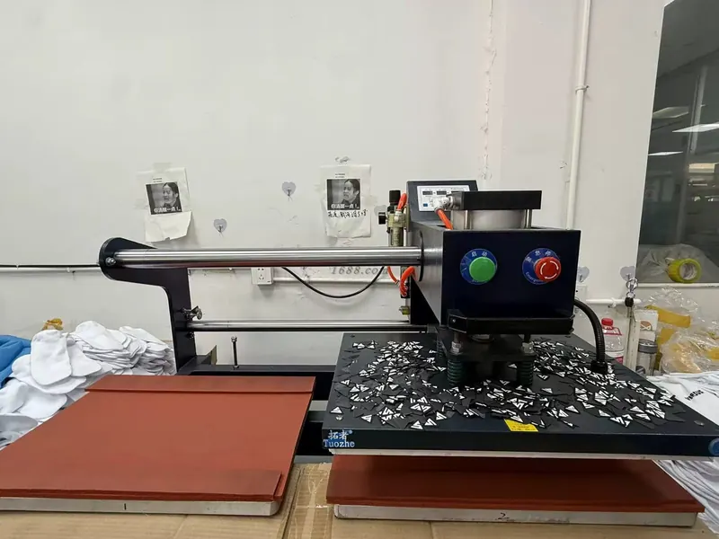
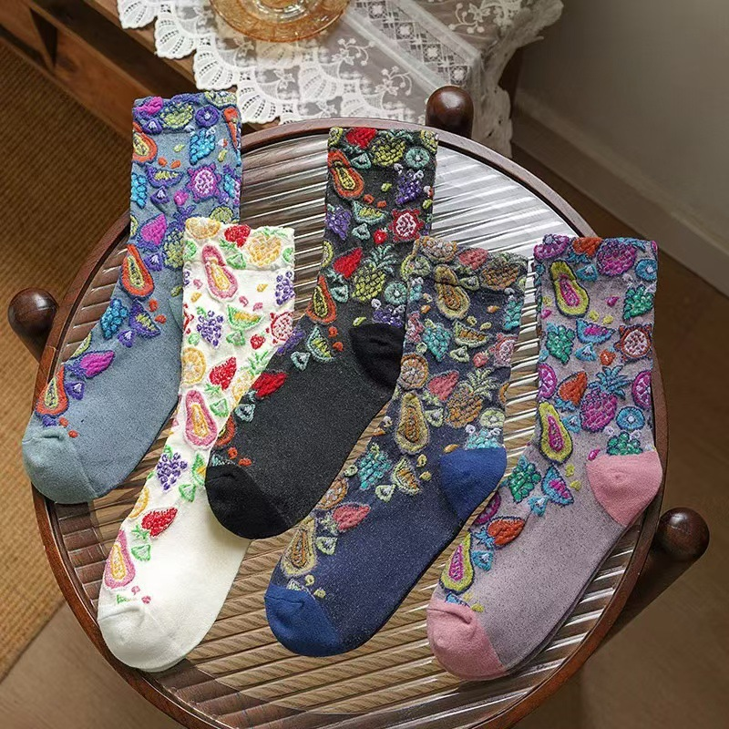
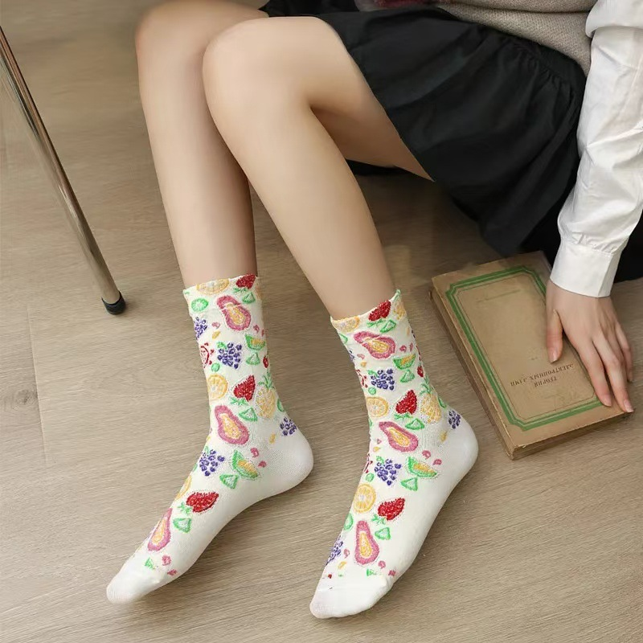

Custom sock manufacturing begins long before a machine starts knitting. The clearer the project direction is at the beginning, the easier it is to turn a design into a sample that can be approved with confidence. This guide is for brands, teams, retailers and promotional buyers planning their first factory-direct sock project.
GoodStartSocks is an OEM and ODM custom sock manufacturer based in Zhuji, Zhejiang, China. We support buyers through project planning, sample development, bulk production and packaging discussions. A standard order starts from 500 pairs.
1. Define the role of the socks
Decide whether the emphasis is everyday comfort, performance, brand presentation, gifting or retail display. This first decision informs the height, material direction, logo placement, size approach and packaging level. Browse our custom sock styles and sock height guide to make the desired silhouette clear.
2. Turn visual ideas into production information
Share where the logo should sit, how many colours are important, whether a pattern should repeat, and which details should remain visible when the sock is worn and stretched.
Useful files and references
- Logo artwork or a clear reference image
- Colour references and priority-colour notes
- Preferred sock style and height
- Packaging or retail-presentation references
- Any elements that must not change during development
For knitted designs, highly detailed text and fine lines may need to be simplified so the result remains readable in the finished construction. It is better to review that trade-off during sampling than after bulk production begins.
3. Make the quantity and size plan usable
Quantity affects the production route, colour allocation, size breakdown and packaging plan. GoodStartSocks has a standard starting MOQ of 500 pairs.
| Starting MOQ | 500 pairs |
|---|---|
| Sample preparation guide | About 3–7 days |
| Bulk-production guide | About 30 days after sample approval |
| Factory location | Zhuji, Zhejiang, China |
Buyer Questions, Answered
Use clear references to discuss texture and the worn result before sampling. These images show a textured knit direction; your final construction, colours and artwork are confirmed through the approved sample.

Can a knitted design have visible texture?
Yes. Raised and multi-colour knitted details can create a tactile surface. During sampling, confirm which areas need definition and which should remain comfortable against the skin.

How will the pattern look when worn?
Review the sample both laid flat and worn. Stretch, placement around the ankle and visibility with footwear can change the final impression.
If the order serves more than one customer group, list the expected pair count for each size group. Even an estimated mix is more useful than leaving sizes until the end.
4. Treat the sample as a decision point
A sample should be evaluated as a product, not only as a photograph. Review it laid flat and worn. Look at colour direction, logo clarity, comfort, cuff feel, heel position, toe area, stretch and recovery. If the project includes packaging, check whether the sample sits well in the selected presentation format too.
The usual guide for sample preparation is about 3–7 days. Changes are normal at this stage; their purpose is to identify them before bulk production begins.
5. Create an approval reference for bulk production
Once the sample is approved, preserve the approved sock, its corresponding artwork version and any measurement or packaging notes together. This reference set helps keep repeat orders consistent. Bulk production is typically about 30 days after sample approval; final timing depends on specifications, quantity, packaging, schedule and shipping.
6. Plan packaging as part of the product
Packaging can protect the socks, carry size or care information, and create the intended retail or gift experience. Discuss bands, hang tags, labels, bags, boxes or gift-ready formats before the production plan is locked. Visit our project examples for format inspiration; they do not imply named-brand partnerships.
7. Send one complete brief for an accurate discussion
Combine the intended sock type, artwork, estimated quantity, size range, material direction, packaging idea, destination and target date in one message. Our project-brief checklist gives you a simple format. If you are comparing MOQ and schedule options, see the custom socks MOQ guide.
Start Your Custom Sock Project →